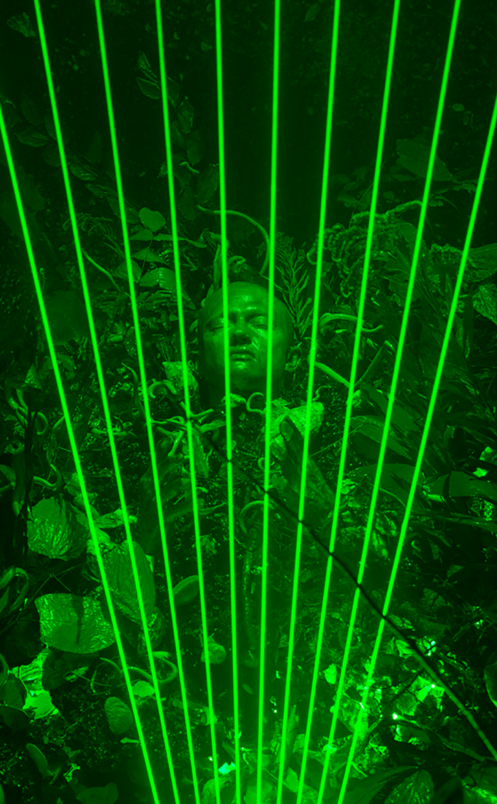

Andreas Angelidakis, Demos Bar, 2018
If on the one hand implosion as concept-image mimics the fragmentation and dissolution of the traditional collective experience with the visual, on the other it also signals the ambition to counteract or at least critique such atomization. Indeed and on a literal note, the figure of the mobile phone or the tablet as a means to display images, so common in contemporary art contexts just a few years ago, is notably absent.
Inversely,
the biennial privileges large-scale projected images contextualizedin expanded environments where sculpture and/or architecture play an important role, a gesture emphasizing the physicality ofspace and body in the encounter with images, which was also key to the visceral performance program showcasing Elysia Crampton, Ligia Lewis, Pan Daijing, and Angela Dimayuga and Meriem Bennani’s performative dinner.
No history in a room filled with people with funny names 5, 2018
On the CAC’s top floor, Tamara Henderson’s Womb Life -2018- forefronts the silenced materiality of apparatus, bodies, and images.Her installations choreograph space as a film set approaching the floor as though it were a continuous connected body and transforming it into a system which is both kinetic and still.
Korakrit Arunanondchai and Alex Gvojic present No history in a room filled with people with funny names 5 -2018, an immersive installation comprising three videos and several sculptural elements Proposing touching by means other than physical contact as a possible action, the work propels a form of spirituality, exploring being human in the age of multiple information processing.
Such concern around spatial configuration and materiality is explored throughout the exhibition.
Biennale de l’Image en Mouvement at Centre d’Art Contemporain, Genève